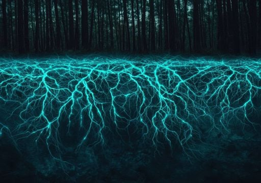

The Story
Long before humans understood the complexity of ecosystems, forests had already developed their own communication systems hidden beneath the ground. The Wood Wide Web is formed by mycorrhizal fungi, which attach themselves to plant roots and extend outward through the soil in fine, thread-like structures. These fungal networks act as bridges, linking one plant to another across surprising distances.
Through this system, trees can share essential nutrients such as carbon, nitrogen, and phosphorus. A tree in full sunlight may send excess sugars to a shaded neighbor, while a stressed plant can receive support from surrounding vegetation. This exchange ensures that resources are distributed efficiently, strengthening the resilience of the entire forest.
Perhaps even more fascinating is the network’s role in communication. When a plant is attacked by pests or disease, it can release chemical signals through the fungal network, warning nearby plants to activate their defenses. Some studies even suggest that older, well-established trees act as central hubs, supporting seedlings and maintaining the balance of the ecosystem. Rather than competing alone, the forest operates as a cooperative network where survival is shared.

Philosophical Questions
Where does individuality end in a connected forest?
If trees are constantly exchanging resources and information, it becomes difficult to define them as completely separate entities. The Wood Wide Web suggests that life may exist not just within organisms, but within the connections between them.
This challenges the idea that independence is the default state of living systems, hinting instead that interdependence may be the true foundation of life.
Is cooperation more natural than competition?
Traditional views of nature emphasize survival of the fittest, yet the Wood Wide Web reveals a different dynamic—one of sharing and mutual aid. Trees do not simply compete; they also support, sustain, and protect one another.
This raises the question of whether cooperation is not an exception, but a fundamental rule of ecosystems.
Can humans learn from underground networks?
The forest’s hidden system offers a powerful metaphor for human societies. Just as trees rely on unseen connections, people thrive through relationships, communication, and shared resources.
In a world that often prioritizes individual success, the Wood Wide Web reminds us that strength can come from connection, and that the most important systems are sometimes the ones we cannot see.